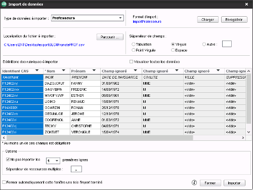
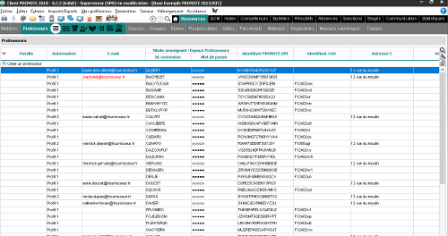

Il est important d'effectuer une sauvegarde de la base Pronote afin d'éviter que les imports ne «cassent» la base Pronote
Il convient de réaliser un export depuis l'ENT par type de population (enseignant, personnel, élève, parent) à partir de l'application
«Gestion des comptes» de l'ENT (bouton "Exports" puis "Pronote"). L'import dans pronote se réalise population par population.
Le choix des options d'export (Normalisé = tout en majuscule et sans accent) est à effectuer en fonction des saisies déjà réalisées dans
la base pronote afin de faciliter le rapprochement des comptes.
Le choix de l'encodage des caractères (UTF-8 ou ISO, important pour les caractères diacritiques) dépend de l'installation de pronote et donc aucune préconisation ne peut être faite.
L'association des comptes dans pronote, qui se réalise population par population, consiste à insérer dans la base pronote
l'identifiant que l'ENT transmet lors de l'accès de l'utilisateur à pronote.
Cet identifiant est appelé "Identifiant CAS" dans pronote.
Les fichiers exportés de l'ENT doivent être déposés une machine où le client Pronote est installé et où l'on peut se connecter à la base Pronote avec le compte SPR.
il faut se connecter à Pronote avec le compte SPR.
Pour chaque type de population, il faut importer le fichier ENT via le menu Pronote
"Imports/Exports > TXT/CSV/XML > Importer un fichier texte".
Cette action ouvre une boite de dialogue permettant de sélectionner un fichier au format texte par défaut, mais aussi au format csv, c'est le format csv qui convient.
La sélection du fichier à importer ouvrira une nouvelle boite de dialogue qui permet d'associer les champs du fichier csv
aux informations de la base pronote.
Dans cette boite de dialogue, il faut renseigner un certain nombre de rubriques à importer:

Pour finir, il faut cliquer sur le bouton « Importer » pour lancer l'import
Lors de la fermeture de la fenêtre, il peut être proposé d'enregistrer le format d'import'. Cela peut s'avérer pratique pour le recharger lors des prochains imports.
Si vous choisissez d'enregistrer ce format d'import, nommez le en mentionnant le type de population concernée.
Le rapport d'import donne des indications sur le succès du rapprochement des comptes. Les « nouveaux comptes »
inscrit sont les comptes qui n'aurons pas pu être rapproché et qu'il faudra sans doute supprimer sinon pour ne pas se retrouver avec des doublons
dans la base, par contre les « comptes modifiés » sont les comptes qui ont été rapprochés.
Malheureusement, la procédure ne permet pas un retour en arrière, il est donc important d'effectuer une sauvegarde de la base pronote avant
toute action. Il est même recommandé de réaliser une sauvegarde après chaque étape de rapprochement.
ATTENTION, piège à éviter : au moment de la définition des colonnes à rapprocher dans l'interface pronote, la colonne de l'identifiant n'est pas associée à la colonne "Identifiant CAS" automatiquement. Il faut faire cette association, en cliquant simplement sur l'intitulé de la colonne, pour que le nouvel identifiant soit mis à jour dans la base pronote.
Pour vérifier que l'import s'est bien passé, il suffit de vérifier dans les informations utilisateur que la colonne "Identifiant CAS" est correctement renseignée avec un identifiant de 36 caractères.
Il n'est pas toujours nécessaire de réaliser l'import d'un fichier csv, notamment quand il s'agit d'effectuer une association pour un nombre très limité d'utilisateurs
ou de traiter quelques cas marginaux.
Pronote permet dans ce cas de saisir directement ce qu'ils appellent l'Identifiant CAS dans une liste d'utilisateurs.
L'Identifiant CAS de Pronote doit correspondre à l'identifiant de l'utilisateur dans l'ENT (sur 36 caractères). Cet identifiant peut être récupéré via la
Gestion des comptes ENT, en générant le fichier d'export pour pronote que vous pourrez alors édter dans un tableur pour repérer la ligne correspondant à la personne concernée.
Dans pronote, on affiche la liste des utilisateurs en cliquant sur « Ressources (nommé Rsc.) », puis en choisissant la population désirée.
Si la colonne Identifiant CAS n'est pas affichée, il faut l'ajouter au tableau en cliquant sur la petite clé à molette, en haut,
à droite du tableau.
On peut ensuite entrer l'Identifiant CAS en double-cliquant sur la case correspondante sur la ligne du tableau associée
à l'utilisateur et en entrant l'identifiant de l'utilisateur récupéré dans le fichier d'export ENT.
Ces tableau des utilisateurs permet aussi, après un import, de vérifier que celui-ci s'est bien passé, que les Identifiant CAS
ont bien été récupérés et qu'il n'y a pas eu de créations de comptes non désirés.
